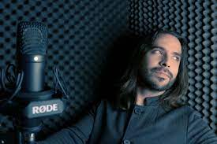

Este es un sitio para conocer los datos mas relevantes sobre la increible serie: ¡El show de cuphead!, esta serie se basa en un videojuego indie, que todos deberian probar. El concepto del videojuego es sobre dos hermanos taza que un día van a un casino en donde se ponen a apostar de manera descontrolada, estan ganando mucho cuando uno de estos, se pasa en sus apuestas y pierde, eso causa que le deba su alma al diablo. Para poder librarze de tan terrible destino deberán cumplir ciertas ordenes que el diablo les da.
Veamos unos algunos datos sobre el desarrollador.
José Daniel Mendoza Monterroza.
Es un estudiante de Bachillerato Tecnico Vocacional en Desarrollo de Software y cruza el primer año; tiene 17 años y este es su primer proyecto. Le gustan mucho las series de dibujitos y por eso decidio que el mejor tema para hacer su proyecto era sobre una muy nueva serie de netflix.
Su gran sueño es, encontrar la felicidad maximá al mismo tiempo que aprende sobre el mundo de la informatica. Con conocimientos basicos en el ingles planea aprender sobre programación, él cree que por sus conocimientos en el idioma le será mas facil aprender tal cosa.
Y deseo con gran algaravia que esta eb sea del agrado de todos.
Acerca de la serie
¡El Show de Cuphead! es una serie animada canadiense-estadounidense exclusiva de Netflix basada en el popular videojuego Cuphead, producida por Netflix Animation y King Features, producida por Dave Wasson (que entre otros proyectos ayudó a crear los cortometrajes de la serie Mickey Mouse) y co-producida de manera ejecutiva por Cosmo Segurson (que entre varios proyectos colaboró en la creación de La vida moderna de Rocko: Cambio de chip).
La serie se estreno el 18 de febrero de 2022.
El 2 de marzo de 2022, Netflix renovó la serie para una segunda temporada, la cual fue estrenada el 19 de agosto de 2022.
¡El Show de Cuphead! ampliará los personajes y el mundo de Cuphead, con un estilo de animación inspirado en los dibujos animados clásicos de Fleischer de la década de 1930. Participa en las desventuras únicas del impulsivo Cuphead y su cauteloso pero fácil hermano Mugman. A través de sus muchas desventuras en el surrealista hogar de las Inkwell Isles(Islas Tintero), siempre se tienen la espalda.
Trailer oficial de la serie
Trailer oficial de la temporada 2
Personajes
Protagonistas
Cuphead
¡El personaje principal de The Cuphead Show!(¡El show de Cuphead!) es divertido e inmaduro. Su impulsividad lo mete en los libros equivocados con Satanás y así es como comienzan las desventuras. Cuphead es un personaje jugable, el protagonista principal y uno de los dos personajes principales del videojuego Cuphead. Este es jugado por el primer jugador, es el irresponsable hermano gemelo mayor de Mugman. A diferencia del juego, aquí se ve mas lo hiperactivo y problemático que es. Siempre se encuentra en los capitulos vagando por su casa junto con Mugman haciendo cualquier cosa rara que se les presente, como en uno donde tratan de obtener dinero subiéndose (ilegalmente) a un barco y se encuentran con unos de los jefes del primer mundo en el juego, usualmente sus aventuras terminan con ambos haciendo un desastre por todo el lugar donde estuvieron.
Mugman
Mugman es un personaje jugable, protagonista junto a su hermano Cuphead y uno de los dos personajes principales del videojuego Cuphead. Este es controlado por el segundo jugador, es su hermano que usualmente no es reconocido aunque siempre lo acompañe, es alguien mas tímido pero mucho mas responsable que Cuphead, y al igual que el, aveces causa desastres junto con Cuphead, pero no siempre. Siempre apoya a su hermano (Cuando se puede) en sus situaciones, como en su situación con el Diablo donde le hizo un sueter invisible que aparentemente es intocable para el Diablo.
Don Tetera (Elder Kettle)
El abuelo y guardián de Cuphead y Mugman, a diferencia del juego donde cumple un rol menor, aquí aparece en varios de los episodios, donde también se muestra lo gruñón que es.
Según uno de los capítulos, participo en alguna guerra de joven, lo cual es raro de pensar viendo el mundo en el que se ambienta esta caricatura, también hay uno donde le entra la crisis de la mediana edad por unas cosas que estaban diciendo Cuphead y Mugman (Que resulta que se referían al final a un gusano).
Ms. Chalice
Al igual que en el juego, es un fantasma que por alguna razón se puede materializar en el mundo físico y se la pasa bailando y haciendo que todos los que la miren le den lo que ella quiere. Ella es muy solitaria, pero puede llevarse bien con algunas personas, como Cuphead y Mugman. Sin embargo, en el videojuego no sabemos muy bien cuál es su personalidad, pero probablemente sea parecida a la de su vida anterior.
Antagonistas
Diablo
Satanás, Belcebu, Lucifer, o simplemente llamado El Diablo es un ser que vive en el infierno que aparentemente esta justo debajo de la ciudad donde viven todos los protagonistas y demás personajes, y su objetivo es robar almas y causar miseria, ¿Para que?, porque es el diablo y está en su naturaleza ser malvado, a diferencia del juego, aquí se comporta mas como un típico villano de series de comedia, pero eso no significa que no debe ser temido o tomado enserio. En el Show, canta y a veces hace cosas ridículas para conseguir lo que quiere, y no es tan listo como Estricto.
King Dice
<
King Dice, uno de los personajesmas populares y queridos del videojuego, y también uno de los antagonistas principales. En la serie es reducido a un antagonista secundario ya que hasta ahora solo ha aparecido en un capitulo, aunque su función es casi la misma, es un sirviente mas del Diablo pero en vez de dirigir un casino, dirige un show de concursos donde "ganan premios".
Doblaje
Sergio Pinto-Cuphead
Sergio Pinto es un actor venezolano de doblaje, teatro, cine y televisión. Actualmente activo grabando para varios estudios en Venezuela y también se desempeña como instructor de doblaje y acento neutro en "Voces de marca". Actualmente reside en Bogotá, Colombia en donde continua activo como actor de doblaje.
Giovanni Cruz-Mugman

Giovanni Cruz es un actor y director de doblaje también locutor colombiano. Entre sus interpretaciones es conocido por ser la voz de Eliot Spencer (Christian Kane) en la serie Leverage y en películas al ser voz de Chris Evans, Bradley Cooper, Ian Ziering, Jon Cryer, Luke Wilson, Paul Rudd, Scott Speedman, Tobey Maguire y Viggo Mortensen.
Hermes Camelo-Don Tetera
Hermes Camelo es un actor de televisión y de doblaje colombiano. Es conocido por hacer la voz de Makoto Shishio en Samurái X. Ha dado voz a actores como Danny Trejo, Brian Cox, Michael Caine y Robert De Niro.
Katheryn Guzmán-Calíz
Katheryn Guzmán es una actriz de doblaje y locutora colombiana.
Felipe Ballestas-Diablo
Luis Felipe Ballestas Vivas es una actor de doblaje, camarógrafo y voice over colombiano.
Harold Leal-Rey Dado
Harold Leal es un actor de doblaje colombiano. Es una de las voces más importantes en el medio.
.png)